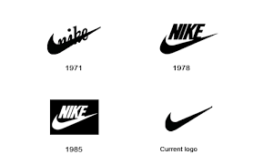
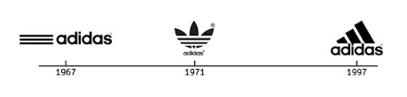
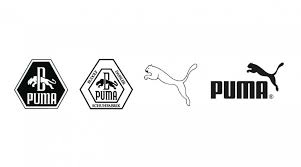

Botines de Futbol
A continuacion se mostraran las historias de cada marca (Nike, Puma, Adidas) de botines de futbol, entre otros articulos,
- BOTINES NIKE
- BOTINES ADIDAS
- BOTINES PUMA
NIKE
Nike es una empresa multinacional estadounidense dedicada al diseño, desarrollo, fabricación y comercialización de calzado, ropa, equipo, accesorios y otros artículos deportivos.
Es uno de los mayores proveedores de material deportivo,5? con unos ingresos de más de 24,100 millones de dólares estadounidenses y un total en 2012 de unos 44,000 empleados. La marca por sí sola tiene un valor de 15,900 millones de dólares estadounidenses, lo que la convierte en la marca más valiosa entre las corporaciones deportivas.6?
La empresa fue fundada el 20 de enero de 1964 como Blue Ribbons Sports por Phil Knight y Bill Bowerman,7? y se convirtió oficialmente en Nike Inc., el 30 de mayo de 1971.

ADIDAS
Adidas es una compañía multinacional alemana fundada en 1949 dedicada a la fabricación de calzado, ropa deportiva y otros productos relacionados con el deporte y la moda (bolsos, camisas, relojes, anteojos, etc.), y patrocinadora de eventos y figuras deportivas a nivel mundial.
Es uno de los mayores proveedores de material deportivo,1? con unos ingresos de más de 14 534 millones de dólares estadounidenses y un total en 2014 de unos 60 000 empleados.1? La marca por sí sola tiene un valor de 6800 millones de dólares estadounidenses, lo que la convierte en la segunda marca más valiosa entre las corporaciones deportivas.

PUMA
Puma es una empresa alemana fabricante de accesorios, ropa y calzado deportivo, cuya sede central está en Herzogenaurach, Alemania.
La compañía fue fundada en 1948 bajo el nombre de Gebrüder Dassler Schuhfabrik por Rudolf Dassler, el hermano de Adolf "Adi" Dassler, que fundó su competidor, Adidas. Actualmente, la compañía opera bajo una estructura virtual que le permite manejar todas las divisiones en el mundo. Desde 2007, Puma pertenece en parte al grupo francés Kering.
